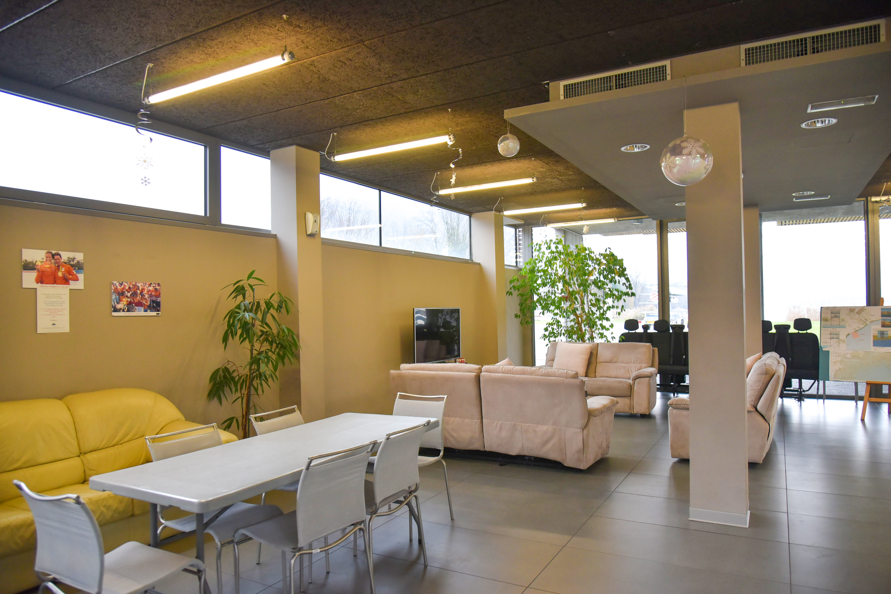

Negli anni ’60 le società che si affacciano sul ramo di ponente iniziano ad affrontare i primi problemi dovuti
alla navigazione, sempre più frequente, ed al vento che rende sempre più agitate le acque bellissime del Lago
di Como. Si cercano alternative nei laghetti minori che, creati dallo stesso ghiacciaio che ha generato il Lago
di Como, posti a semicerchio avvicinano il ramo di Lecco a quello di Como. Fra questi, il Lago di Pusiano
rappresenta la migliore soluzione sia dal punto di vista meteorologico, grazie ad una assenza quasi totale
di vento, sia dal punto di vista della tranquillità del lago essendo vietata la navigazione. Alla tranquillità
delle acque si aggiungono una lunghezza, una larghezza e superficie complessiva adattissime all’attività di
formazione, di tecnica e di allenamento per l’attività di canottaggio. Si affacciano quindi le prime società
che successivamente negli anni ’80 invitano la Federazione Nazionale di Canottaggio a considerare l’opportunità
di finanziare una sede periferica fondamentale per l’attività agonistica delle società del Lago di Como. Sono
gli ultimi anni di un grandissimo ed amatissimo Presidente Federale molto sensibile allo sviluppo del attività
remiera che non si fa sfuggire l’occasione per dare importanza alla pratica del remo. Fu proprio Paolo D’Aloja
a portare di persona i fondi per la realizzazione del primo hangar barche all’allora sindaco di Eupilio,
Vittorio Molteni. Inizia così la storia del Centro Remiero che successivamente, negli anni ’90, viene ampliato
affiancando una piccola palestra con sala voga ed un centro di medicina dello sport. Le società del Lago di Como
trasferiscono sul Lago di Pusiano, la sede operativa per la preparazione agonistica delle rispettive squadre.
Creano un comitato e iniziano a collaborare per la gestione del Centro. Primo ed unico progetto di aggregazione
in Italia. Si arriva così al 2010, quando, in una bellissima serata al ristorante della Canottieri Lario,
l’assessore allo sport della provincia di Como, Achille Moioli, espone alle società del lago uno studio di
fattibilità per ampliare e completare il centro che era nel frattempo diventato insufficiente ad ospitare tutti
gli atleti del Lago. Dall’incredulità delle società si è passati alla sorpresa nel vedere ben presto la proposta
realizzata in un progetto di massima; la realizzazione è stata affidata al Consorzio del Lario ora Autorità di
Bacino del Lario e dei Laghi Minori; dal progetto si è passati alla richiesta di finanziamento che vede
coinvolti oltre alle province di Como e Lecco, ben 7 comuni ed altrettanti enti ed associazioni ambientati
e di tutela del territorio. Tutti ci credono, tutti si impegnano. Si arriva all’assegnazione dei lavori ed
alla posa della prima pietra; nel novembre del 2012 iniziano i lavori per la realizzazione di quello che
possiamo definire oggi uno dei centri di canottaggio più belli d’Italia.
Centro Remiero Lago di Pusiano asd
Via Provinciale 26, Eupilio (CO) 22030
P.I. 03535530137
info@centroremierolagodipusiano.it
centroremierolagopusiano@pec.it
Codice Univoco BA6ET11
Segreteria
info@centroremierolagodipusiano.it
centroremierolagopusiano@pec.it
+39 031 656441
Direzione Tecnica
coach@centroremierolagodipusiano.it
Sezioni Agonistiche
corsi@centroremierolagodipusiano.it
sezione.canottaggio@centroremierolagodipusiano.it
© Centro Remiero Lago di Pusiano asd 2023
Tutti i diritti sono riservati